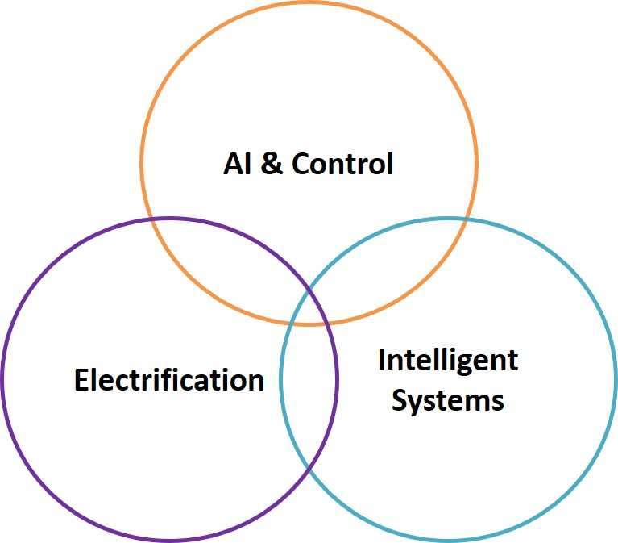

Research OCAI-LabOptimal Control and Artificial Intelligence LabThe Optimal Control and Artificial Intelligence Lab (OCAI-Lab) at Oakland University was established in 2020. The primary research of OCAI-Lab are in the areas of AI-enhanced advanced control and optimization algorithm development with application in automotive and energy systems. This vibrant multidisciplinary research program can synergistically fuse control theory, optimization, machine learning, and statistics. My research is synergistic with the growing area of Cyber-Physical Systems and will lead to smarter energy and transportation systems with improved efficiency, resiliency, and environment-friendliness. Lab MembersCurrent Ph.D. Students:
Current Master Students: Current Undergraduate Students: |